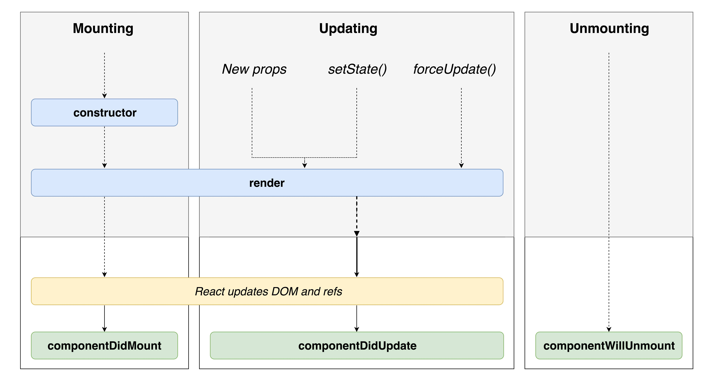

React 3

What will we learn today?
Recap
Last week we looked at using props and state to create React components that change with user input (interactive example):
class Counter extends Component {
constructor(props) {
super(props);
this.state = { count: 0 };
}
increment = () => {
this.setState((previousState) => {
return {
count: previousState.count + 1
};
});
};
render() {
return (
<div>
Count: {this.state.count}
<button onClick={this.increment}>Click me!</button>
</div>
);
}
}
Unmounting
So far we've looked at components that are always rendered in the browser. However (and this is often the case in large applications), we might want to control whether components are shown or not. Let's look at a Toggle component (interactive example):
const Message = () => (
<p>I'm shown when this.state.isShown is true ✅</p>
);
class Toggle extends Component {
constructor(props) {
super(props);
this.state = { isShown: false };
}
toggle = () => {
this.setState((previousState) => {
return { isShown: !previousState.isShown }
});
};
render() {
return (
<div>
{this.state.isShown ? <Message /> : null}
<button onClick={this.toggle}>Toggle</button>
</div>
);
}
}
If you open up dev tools, you will see that the element changes based on the isShown state. The hidden element is not hidden with CSS, it is actually removed from the DOM. This is because this.state.isShown is false which means the Toggle component returns null for that part of the JSX. If you return null in JSX then React will render nothing at all.
The Circle of Life
When a component is within the DOM, we call it mounted. When a component is removed from the DOM, we call it unmounted. When we change state like in the unmounting example above, we can switch between these statuses. This gives us a clue that components go through a lifecycle of different statuses. We have seen 2 of the statuses: mounting and unmounting, there is also a third called updating.
We can hook into this lifecycle through special component methods that are added by React's Component class. They are run at different points of the lifecycle, often before and after they change to a different status. The method names contain will or did based on whether they run before or after a status change.
This diagram shows the React component lifecycle:

Let's look at how we can use one of the lifecycle methods (interactive example):
class Lifecycle extends Component {
componentDidMount() {
console.log('componentDidMount');
}
render() {
return <div>Hello World</div>;
}
}
Exercise A Open the
pokedexapplication that we have been working on for the last 2 weeks and open theCaughtPokemon.jsfile
- Add a
constructormethod to theCaughtPokemoncomponent. Within this method add aconsole.log('constructor')- Add a
componentDidMountmethod to theCaughtPokemoncomponent. Within this method add aconsole.log('componentDidMount'). You don't need to return anything from this method- Repeat the same step above with the
componentDidUpdateandcomponentWillUnmountmethods- Try interacting with the
CaughtPokemoncomponent in your web browser (clicking the button) while looking at the JavaScript console. What order do the logs appear?- The
componentWillUnmountmethod will never be called. Can you explain why?
We'll now focus on a few of the lifecycle hooks and see how they are used.
componentDidMount and componentWillUnmount
The componentDidMount method runs after a component has finished rendering to the DOM. The component is now waiting for a props change or input from the user. It is called only once. We use this lifecycle hook to make changes outside of the component (sometimes these are called side effects).
The componentWillUnmount method runs when a component has been unmounted from the DOM. It is used to "clean up" the component as it is no longer being shown. Often we need to close down or cancel the changes we made in componentDidMount.
To look at these in more detail, we'll create a Clock component in an exercise.
Exercise B Open the
pokedexReact application again
- Create a new file called
Clock.jsin thesrcdirectory- Copy and paste in the code below (interactive version):
import React, { Component } from 'react';
class Time extends Component {
constructor(props) {
super(props);
this.state = { date: new Date() };
}
tick = () => {
console.log('tick');
this.setState({
date: new Date()
});
};
render() {
return (
<div>{this.state.date.toLocaleTimeString()}</div>
);
}
}
class Clock extends Component {
constructor(props) {
super(props);
this.state = { isShowingClock: true };
}
toggle = () => {
this.setState((previousState) => {
return { isShowingClock: !previousState.isShowingClock };
});
};
render() {
return (
<div>
{this.state.isShowingClock && <Time />}
<button onClick={this.toggle}>Toggle time</button>
</div>
);
}
}
export default Clock;
- In
App.jsimport theClockcomponent withimport Clock from './Clock'- Then render the
Clockcomponent in theAppcomponent (hint:<Clock />)- Now change the
Timecomponent (notice that there are 2 components defined in this file) add acomponentDidMountmethod- Within the
componentDidMountmethod usesetIntervalto callthis.tickevery 1000 milliseconds (hint:setInterval(this.tick, 1000))- Now open the JavaScript console your web browser. What is happening? Can you explain why?
- Keep looking at the JavaScript console and try clicking the "Toggle time" button. What do you think the problem is here? How can we fix it?
- Change the
componentDidMountmethod to assignthis.timerto the output ofsetInterval(hint:this.timer = setInterval(this.tick, 1000))- Add a
componentWillUnmountmethod to theTimecomponent- In the
componentWillUnmountmethod, remove the timer by callingclearInterval(this.timer)- Try clicking the "Toggle time" button again, like in step 9. How have we solved the problem?
Fetching Data in React
Most web applications will load data from the server. How do we do this in React? The component lifecycle is very important - we don't want to be calling our API at the wrong time, or multiple times with the same data!
If we tried to fetch data in our render method, it would make a request every time props or state changed. This would create lots of unnecessary requests. As we saw above, componentDidMount is called only once when the component is first rendered and so it is an ideal place for making requests. Let's look at an example (interactive example):
class MartianPhotoFetcher extends Component {
componentDidMount() {
fetch(`https://api.nasa.gov/mars-photos/api/v1/rovers/curiosity/photos?earth_date=${this.props.date}`);
}
render() {
// We don't don't what the img src is when we render :(
return <img src={src} />;
}
}
This example isn't very useful! We can't use the data returned from the server in render because the request is asynchronous :( We need React to re-render once the request is resolved - a perfect use for state! Let's look at an example (interactive example)
class MartianPhotoFetcher extends Component {
constructor(props) {
super(props);
this.state = {
imgSrc: null
};
}
componentDidMount() {
fetch(`https://api.nasa.gov/mars-photos/api/v1/rovers/curiosity/photos?earth_date=${this.props.date}`)
.then(res => res.json())
.then(data => {
this.setState({
imgSrc: data.photos[0].img_src
})
});
}
render() {
return <img src={this.state.imgSrc} />;
}
}
Now we can see the Martian photo that we fetched from the server!
However we have a bit of a problem - when we first render the component, we don't have the photo src yet. We first have to initialise it to null in the constructor. This shows us that we're missing something from our UI - a loading status.
Let's look at showing a different UI when the request is loading (interactive example):
class MartianPhotoFetcher extends Component {
constructor(props) {
super(props);
this.state = {
isLoading: true,
imgSrc: null
};
}
componentDidMount() {
fetch(`https://api.nasa.gov/mars-photos/api/v1/rovers/curiosity/photos?earth_date=${this.props.date}&api_key=gnesiqnKCJMm8UTYZYi86ZA5RAnrO4TAR9gDstVb`)
.then(res => res.json())
.then(data => {
this.setState({
isLoading: false,
imgSrc: data.photos[0].img_src
})
});
}
render() {
if (this.state.isLoading) {
return <span>Loading... 👽</span>;
} else {
return <img src={this.state.imgSrc} />;
}
}
}
Here are the steps that the component takes:
- Initialise
isLoadingtotrue - In
render, show a loading message becauseisLoadingis true - Once rendered,
componentDidMountwill trigger the API request - When the request resolves, we set the
isLoadingstate to false and set the data that we want - Changing state triggers a re-render, and because
isLoadingis false we render the Martian photo
We can still improve our component! What happens if we make a request that fails? Our request will error, but we won't show the error in the browser. Let's see how we can fix it (interactive example).
First we have to deal with annoying quirk of fetch - it doesn't reject the promise on HTTP errors. We can fix this by adding another .then before we convert to JSON:
.then((res) => {
if (res.status >= 200 && res.status < 300) {
return res;
} else {
throw new Error('HTTP error');
}
})
Now we can add our solution - a .catch on the fetch call. Here we reset the loading state and add the error to state.
.catch((err) => {
this.setState({
isLoading: false,
err: err
});
})
Now we can check if there's an error in state and render out an error message:
render() {
if (this.state.isLoading) {
return <span>Loading... 👽</span>;
} else if (this.state.error) {
return <span>Something went wrong 😭</span>;
} else {
return <img src={this.state.imgSrc} />;
}
}
Exercise C Open the
pokedexReact application again and open thesrc/BestPokemon.jsfile
- If you haven't already, convert the
BestPokemoncomponent to a class component- Create a
constructormethod (hint: remember to callsuper(props))- Set the initial state to have a key named
pokemonNamesthat is assigned to an empty array[]- Add a
componentDidMountmethod to the component- Within the
componentDidMountmethod call thefetch()function with this URL:https://pokeapi.co/api/v2/pokedex/1/. What will this do?- Add a
.then()handler into thefetchfunction (hint: remember this needs to come immediately after thefetch()call) which converts the response from JSON (hint:.then(res => res.json()))- Add a second
.then()handler after the one we just added, where the callback function will receive an argument calleddata- Within the second
.then()callback function, log out the data that we just received (hint:console.log(data.pokemon_entries[0].pokemon_species.name))- Now change the
console.log()to log out an array instead, with the first, fourth and seventh Pokemon (hint:console.log([data.pokemon_entries[0].pokemon_species.name, data.pokemon_entries[3].pokemon_species.name, data.pokemon_entries[6].pokemon_species.name]))- Now again within the
.then()callback function, callthis.setState()to set thepokemonNameskey and assign it to the array that we just logged out (you can copy/paste it)- Inside the
rendermethod, remove the oldpokemonNamesvariable and replace it withthis.state.pokemonNames. What do you see in your web browser?- Add an
isLoadingpiece of state, which is initialised totrue- When calling
this.setState()inside the.then()handler, also setisLoadingtofalse- In the
rendermethod check ifthis.state.isLoadingistrueand return a loading message (e.g.<span>Loading...</span>). Otherwise ifthis.state.isLoadingisfalsethen render the loop as we did before- (STRETCH GOAL) Add some error handling which renders an error message
- (STRETCH GOAL) Explore the data returned from the API. See if you can show some more interesting Pokemon information in your app (hint: try
console.logging different data returned from the API)
Working with forms in React
Modern web applications often involve interacting with forms such as creating an account, adding a blog post or posting a comment. This would involve using inputs, buttons and various form elements and being able to get the values entered by users to do something with it (like display them on a page or send them in a POST request). So, how do we do this in React?
A popular pattern for building forms and collect user data is the controlled component pattern. A pattern is a repeated solution to a problem that is useful in multiple similar cases. Let's have a look at an example (interactive example):
class SimpleReminder extends Component {
constructor(props) {
super(props);
this.state = {
reminder: ""
};
}
handleChange = event => {
this.setState({
reminder: event.target.value
});
};
render() {
return (
<div>
<input
type="text"
placeholder="Some reminder"
value={this.state.reminder}
onChange={this.handleChange}
/>
<p>Today I need to remember to... {this.state.reminder}</p>
</div>
);
}
}
We're controlling the value of the input by using the value from the reminder state. This means that we can only change the value by updating the state. It is done using the onChange attribute and the method handleChange which is called every time the input value changes (typically when a new character is added or removed). If you didn't call this.setState() in the handleChange method, then the input's value would never change and it would appear as if you couldn't type in the input! Finally, the value we keep in the reminder state is displayed on the screen as today's reminder.
In addition, instead of just saving the value of the input in the state, we could have also transformed the string before we set it with this.setState(), for example by calling toUpperCase() on the string.
Let's have a look at a more complex example where we want to build a form to let users enter information to create a personal account (interactive example):
class CreateAccountForm extends Component {
constructor(props) {
super(props);
this.state = {
username: "",
email: "",
password: ""
};
}
handleChange = event => {
this.setState({
[event.target.name]: event.target.value
});
};
submit = () => {
console.log("Do something with the form values...");
console.log(`Username = ${this.state.username}`);
console.log(`Email = ${this.state.email}`);
console.log(`Password = ${this.state.password}`);
};
render() {
return (
<div>
<div>
<input
type="text"
name="username"
placeholder="Username"
value={this.state.username}
onChange={this.handleChange}
/>
</div>
<div>
<input
type="text"
name="email"
placeholder="Email"
value={this.state.email}
onChange={this.handleChange}
/>
</div>
<div>
<input
type="password"
name="password"
placeholder="Password"
value={this.state.password}
onChange={this.handleChange}
/>
</div>
<button type="submit" onClick={this.submit}>
Create account
</button>
</div>
);
}
}
We now have three different inputs named username, email and password, and we keep each entered value in a state with the same name. The method handleChange is reused to keep track of each change of value. The trick here is to use the name of the input element to update the corresponding state. Finally, when the user clicks on the submit button, the submit method is called to process the values. They are currently just displayed in the console but you could imagine validating the format of these values and sending them in a POST request.
Additional note: Have you seen this strange syntax in the setState of handleChange? It's called a computed property name. In a Javascript object, you can use a variable wrapped in square brackets which acts as a dynamic key, such as:
const myFirstKey = "key1";
const myFirstValue = "value1";
const dynamicKeyObject = { [myFirstKey]: myFirstValue };
console.log(dynamicKeyObject); // => { key1: "value1" }
Exercise D Open the
pokedexReact application again and open thesrc/CaughtPokemon.jsfile. In this exercise, instead of recording the number of caught Pokemons, we are going to record the names of each Pokemon you caught.
- Make sure the
CaughtPokemoncomponent is written as a class component- Add an
<input>in therendermethod before thebutton(hint:<input type="text" />)- Add a
valueproperty to the<input>set to the statepokemonNameInput- Initialize the state
pokemonNameInputin the constructor to an empty string''(you can try to set something else than an empty string and verify that this value is correctly displayed in your input)- Create a new
handleInputChangemethod- Add a
onChangehandler to the<input>that will callthis.handleInputChange- Add a parameter called
eventto thehandleInputChangemethod and add aconsole.logwithevent.target.value. In your browser, try writting something in the<input>. What do you see in the JavaScript console?- Use
setStateinhandleInputChangeto recordevent.target.valuein the statepokemonNameInput. In your browser, try writting something in the<input>. What do you see this time in the JavaScript console?- We are now going to save the user input when clicking on the
<button>. InitializecaughtPokemonto an empty array[]instead of 0 in theconstructor. In therender, use.lengthto display the number of items in the state arraycaughtPokemon(hint: it should still display0on the screen). Finally, delete the content ofcatchPokemonmethod (it should be empty, we will rewrite it later).- In
catchPokemonmethod, create a variablenewCaughtPokemonset to the statecaughtPokemonand add the value of the statepokemonNameInputto it (hint: usepush()to add a new item in an array).- In
catchPokemonmethod, usesetStateto record the variablenewCaughtPokemonin the statecaughtPokemon. Open your browser, enter a pokemon name in the<input>and click on the button. Can you see the number of caught pokemon incrementing as you click on the button?- We are now going to display the names of the caught pokemon. In the
rendermethod, add a<ul>element and use the.map()method on thecaughtPokemonstate to loop over each pokemon and return a<li>element for each.- Empty the
<input>after clicking on the button. For this, incatchPokemonmethod, set the state ofpokemonNameInputto an empty string''. 14: (STRETCH GOAL) Make sure the user cannot add a pokemon to thecaughtPokemonstate if the value ofpokemonNameInputstate is empty.
Further Reading
There is a new update to React, which adds a new feature called Hooks. It allows you to access the special super powers of state and lifecycle in regular function components. There is an extensive guide in the official React tutorial.
Homework
- If you haven't already, complete the in-class exercises on your
pokedexapp - Complete all of the lesson 3 exercises in the cyf-hotel-react project
- Try to complete the Stretch Goal exercises in the cyf-hotel-react homework